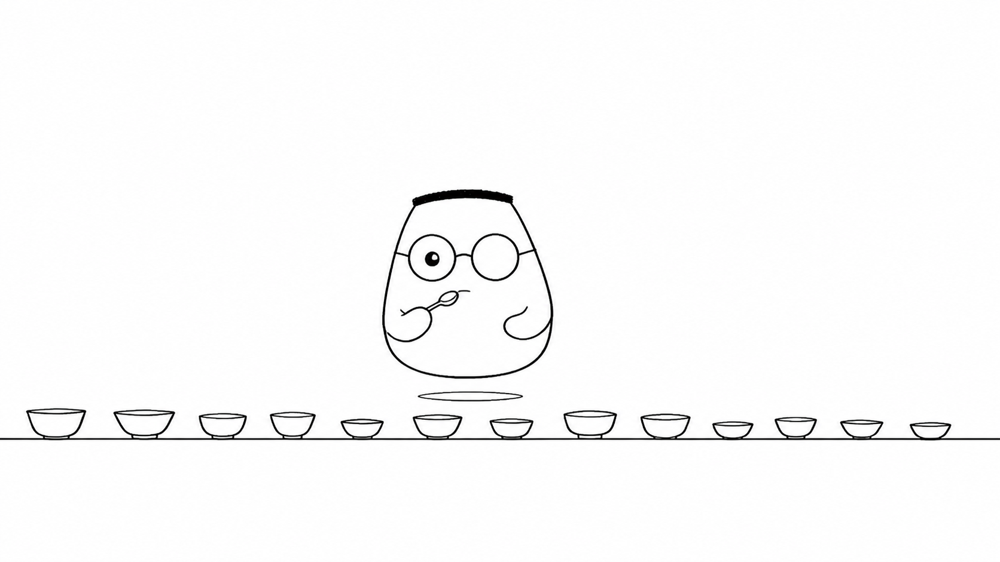
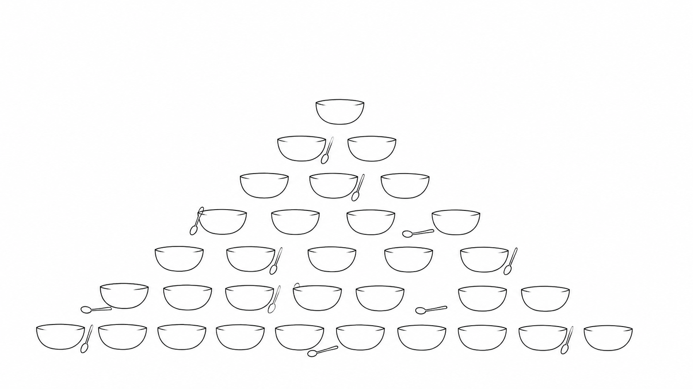
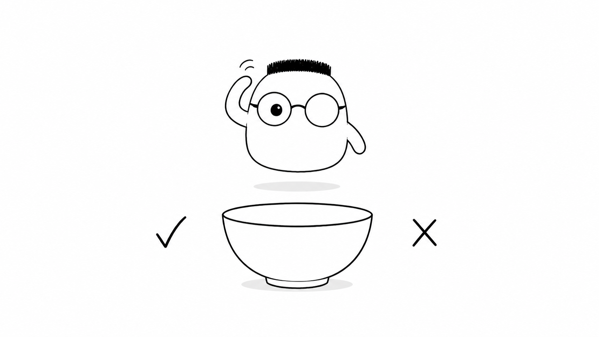

Masalah sehari-hari
Restoran bisa terlihat baik saat dapur sepi. Kesalahan baru muncul ketika pesanan datang berturut-turut. Garam terlalu banyak, pembayaran tidak tercatat, atau pintu pesanan macet.
Tes menjalankan pemeriksaan sebelum kode dipakai tamu. Menangkap rasa asin di dapur lebih murah daripada menunggu keluhan di ruang makan. Tes juga memberi tanda saat resep baru merusak rasa lama.
Analogi Kuka
Kuka menata beberapa mangkuk uji di meja dapur. Setiap mangkuk punya pertanyaan kecil. Gula terasa manis? Kuah terasa pas? Pesanan bisa berjalan dari pintu sampai pembayaran?
Ia tidak menunggu tamu menjadi pemeriksa. Kuka mencicipi bahan sendiri, mencicipi hidangan utuh, lalu sesekali mengikuti seluruh perjalanan seperti tamu biasa.
Peta istilah dapur
Cicipan bahan adalah unit test. Cicipan hidangan utuh adalah integration test. Cicipan dari pintu depan sampai bayar adalah end-to-end test. Dapur adalah kode aplikasi, sedangkan hasil cicip adalah bukti perilakunya.
Ilustrasi

Banyak cicipan kecil menjaga dapur tetap tenang. Kuka dapat mengulang satu cicipan tanpa memasak seluruh menu. Tes menjadi kebiasaan sebelum hidangan dibawa keluar.
Penjelasan konsep
Tes otomatis adalah pertanyaan yang dijalankan mesin. Kode menyiapkan keadaan, menjalankan perilaku, lalu membandingkan hasil dengan harapan. Jika hasil berbeda, tes gagal dan perubahan perlu diperiksa.
Piramida pengujian menaruh banyak cicipan murah di bawah. Unit test cepat dan jumlahnya banyak. Integration test lebih sedikit karena beberapa bagian bekerja bersama. End-to-end test paling mirip pengalaman tamu, tetapi paling lambat dan mahal.

Anatomi sebuah tes sederhana. Siapkan bahan dan keadaan awal. Jalankan tindakan yang diuji. Cicipi hasilnya. Putuskan lulus atau gagal. Pola ini sering disebut arrange, act, assert.
unit test mencicipi satu bagian kecil secara terpisah. Misalnya, fungsi penghitung total harus menjumlahkan dua harga dengan benar. Cicipan ini cepat karena tidak perlu database atau jaringan.
integrasi berarti integration test yang mencicipi beberapa bagian yang sudah tersambung. Handler menerima request, service mengolahnya, lalu database menyimpan hasilnya. Tes ini menemukan masalah yang tidak terlihat saat tiap bagian dicicipi sendiri.
Test double
Test double adalah bahan pengganti untuk latihan. Mock dapat mengembalikan rasa yang sudah diatur atau mencatat apakah ia dipanggil. Pengganti membuat tes lebih fokus dan tidak menghabiskan stok sungguhan.
Dependency injection
Dependency injection memberi celah untuk memasang bahan atau service yang berbeda. Kode produksi memakai database sungguhan. Tes dapat memasang pengganti tanpa membongkar dapur.
Table-driven testing
Table-driven testing menyimpan banyak kasus dalam satu daftar. Setiap baris berisi bahan, tindakan, dan hasil yang diharapkan. Mesin menjalankan baris itu satu per satu.
Database nyata
Integration test kadang memakai database nyata dalam ruang kecil dan bersih. Cara ini menguji query serta aturan penyimpanan yang tidak dapat ditiru sempurna oleh pengganti.
HTTP handler dan API
HTTP handler adalah pelayan di pintu depan. Tes mengirim request ke API, memeriksa status code, lalu melihat bentuk response. Ia memastikan pesan yang keluar sesuai janji.
Tes end-to-end
End-to-end test menyewa tamu tiruan. Tamu masuk dari pintu depan, memesan, makan, dan membayar. Tes ini lambat, tetapi paling dekat dengan kenyataan.
Test coverage
coverage adalah peta bagian kode yang sudah dilewati tes. Peta luas belum menjamin rasa benar. Tes tetap harus memeriksa perilaku penting, bukan sekadar mengejar angka.
Tes flaky
Flaky test kadang lulus dan kadang gagal tanpa perubahan kode. Cicipan seperti ini tidak dapat dipercaya. Cari ketergantungan pada waktu, urutan, jaringan, atau state yang belum dibersihkan.

Fixture dan factory
Fixture adalah bahan siap pakai yang selalu disiapkan dengan cara sama. Factory membuat variasi bahan sesuai kebutuhan kasus. Keduanya mengurangi persiapan yang berulang.
TDD: red, green, refactor
TDD dimulai dari tes yang gagal. Kuka menulis rasa yang diharapkan, memastikan cicipan gagal, lalu memasak sampai lulus. Setelah itu ia merapikan resep tanpa mengubah rasa.
Mocking waktu dan keacakan
Jam dan dadu palsu membuat hasil tes dapat diulang. Tes dapat menetapkan waktu tertentu atau urutan acak tertentu, lalu memeriksa perilaku dengan kondisi yang sama.
Performance dan load testing
Load testing meniru jam sibuk. Banyak tamu datang bersamaan dan sistem harus tetap merespons. Tes ini mencari batas dapur sebelum batas itu dicapai tamu nyata.
Tes di CI/CD
CI/CD menjalankan tes setiap resep baru dikirim. Perubahan yang gagal berhenti di cabang dan belum boleh disajikan. Dapur mendapat pemeriksaan yang konsisten.
Diagram alur
Cicipan yang gagal memberi petunjuk. Kuka memperbaiki resep sampai lulus, lalu merapikan kode. Saat resep berubah, ia mencicipi ulang semua bagian yang perlu dijaga.
Contoh mini
Cicip gula: manis, lulus Cicip kuah: asin, gagal Dapur: perbaiki rasa Cicip kuah lagi: lulus
Kartu pos ini mencatat satu putaran pendek. Tes menunjukkan masalah sebelum kuah diberikan kepada tamu. Kuka bisa memperbaiki dapur dengan bukti yang jelas.
Ringkasan
- Tes menemukan kesalahan di dapur sebelum tamu menemukan masalahnya.
- Piramida punya banyak unit test, lebih sedikit integration test, dan sangat sedikit end-to-end test.
- Anatomi tes menyiapkan keadaan, menjalankan tindakan, lalu membandingkan hasil.
- Unit test cepat karena mencicipi satu bagian kecil secara terpisah.
- Integration test memeriksa beberapa bagian yang bekerja bersama.
- Test double, fixture, factory, dan dependency injection membantu membuat cicipan terarah.
- Flaky test harus dicari penyebabnya karena hasilnya tidak konsisten.
- Tes di CI/CD menjaga resep baru melewati pemeriksaan sebelum disajikan.
Pertanyaan pemahaman
- Kenapa menangkap rasa asin di dapur lebih baik daripada dari keluhan tamu?
- Apa beda mencicip bahan (unit) dan mencicip hidangan utuh (integrasi)?
- Kenapa piramida: banyak cicipan murah, sedikit cicipan mahal?
Mau lebih dalam
Versi teknis membahas pola tes, contoh kode, dan cara menjalankan pemeriksaan di proyek backend.
Disinggung sekilas
Belum dibahas di sini
Crib-sheet dan daftar perintah lengkap ada di versi teknis.